作为一款免费、开源的 C/C++ IDE，Dev C++ 内嵌 GCC 编译器和 GDB 调试器，既能编译、运行程序，也能调试程序。本次 C 程序设计基础我们建议初学者采用 Dev C++ 5.11 版本（点击即可跳转到下载页面）
Dev C++安装
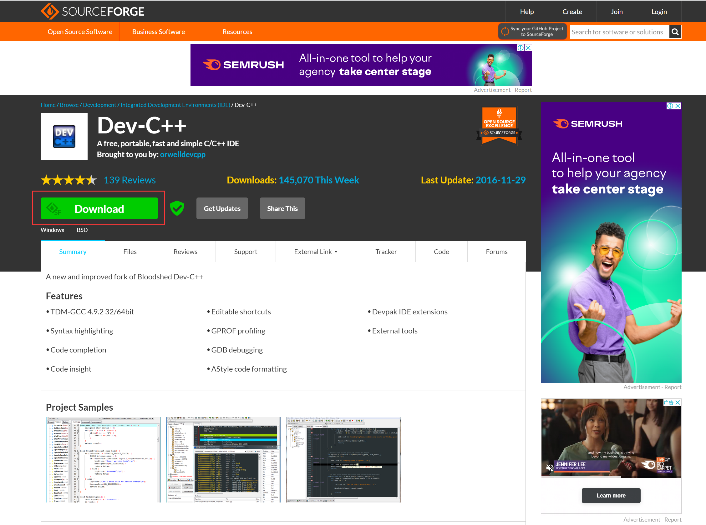
点击 Download 进行下载安装。（建议在 D 盘新建一个文件夹作为安装目录，并将文件夹名改为“Devcpp”，方便文件查找）。
下载完成后在文件夹中打开 Dev-Cpp 5.11 TDM-GCC 4.9.2 Setup.exe 文件，语言选择 English（这个无所谓，后面可以选择界面语言），之后 I agree -> Next -> 选择刚才新建的文件夹作为安装目录 -> Install 等待安装完成。
首次安装时会让你进行一些配置，如图：
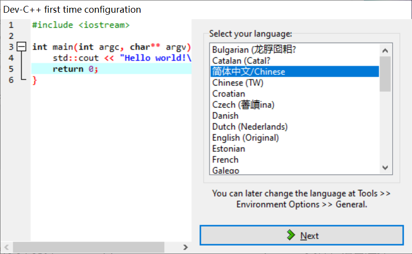
这里的 Language 就是最后的界面语言，选择简体中文。之后一路点 Next Ok 即可。
关于界面
5.11 版本的菜单栏长这样
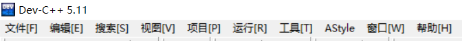
点击菜单栏中的工具 -> 编辑器选项，则可以对界面进行自定义，具体自行探索。
同时，5.11 版本 的 Dev C++ 菜单栏有一个 AStyle 的按钮，可以将你的代码进行格式化。AStyle -> 格式化选项 则可以进一步自定义代码风格。如果你看过我的另一篇文章，则应该对代码风格的重要性有一个清楚的认识。
第一个源程序
我们在之前新建的文件夹(D:/Devcpp/)下新建一个文件夹 src，用来存放我们之后的 C 源代码文件。
打开 Dev C++，点击菜单栏中的文件 -> 新建 -> 源代码，界面中自动出现一个未命名1的文件，文件 -> 另存为，将文件保存在文件夹 D:/Devcpp/src/ 下，并命名为 demo.c。（保存类型选 C source files）
输入以下代码
1 |
|
点击菜单栏中的编译并运行，或者按下键盘上的 F11 键，此时跳出一个黑框，说明程序运行成功。
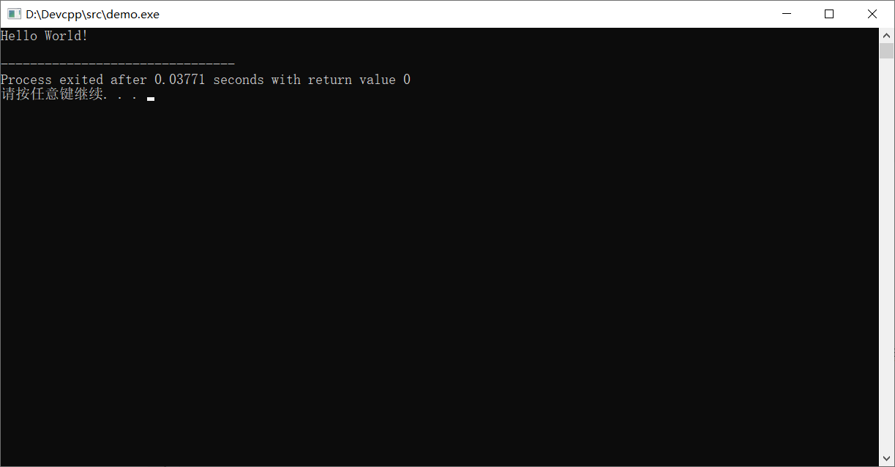
具体 C 语言的语法会在课堂上讲
从 C 语言到可执行程序
如果你细心，你会发现下方有这样这样一条信息👇
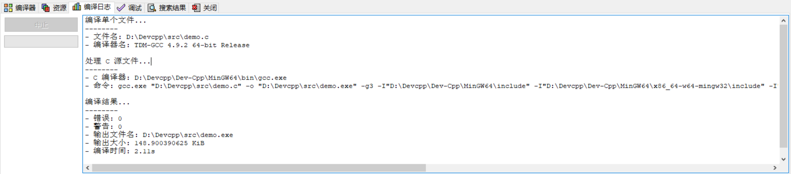
我们来分析一下这信息都是些啥玩意。
编译单个文件
先说说什么是编译吧。C 语言其实是一种比较高级的语言，为什么说它高级呢，是因为这是写给人看的，各种关键字 for, if 其实都是根据人类语言来设计的。
想象一下在某个平行世界里，英文中如果的单词不是
if而是其它的什么乱七八糟的文字组合，那么在那个世界里 C 语言的条件判断关键字就不是if了，而会变成其它形状。
但计算机并不能识别高级语言，更何况在那个 NLP 技术并未兴起的年代。事实上，计算机只能识别二进制文件，称为机器语言，把不同指令编码为二进制文本，然后发给机器，从而进行工作。为此，程序员不得不敲只含 0, 1 的二进制代码，这给当时的工作带来了极大困扰——可读性真的很差。为了让人类看懂代码，计算机科学家们设计出了一系列高级语言（我瞎猜的）。但问题也随之产生：怎样让机器看得懂这些高级编程语言呢？
所谓编译 Compile，简单来说就是根据一定规则，将 C 语言这种高级语言“翻译”成机器能看懂的机器语言，这样机器就能工作了。
当然真正的过程还包括预处理、汇编、链接，感兴趣的请自行了解。
那么这一段就很好理解了。
处理 C 源文件
再来看第二段。C 编译器就是那些专门将 C 语言“翻译”成机器语言的程序，这里 DevC++ 采用的编译器名字叫 gcc。
第二行命令，其实我们只需要知道前面那部分即可👇
gcc.exe "D:\Devcpp\src\demo.c" -o "D:\Devcpp\src\demo.exe"
gcc.exe 指明了编译程序，也可以用其它的；第一个双引号内容是我们要进行编译的源文件；-o 路径名 是指我们希望在指定路径下生成可执行文件 demo.exe。
如果你经常接触电脑，你会发现很多软件的名字都带有
.exe后缀，这是英文单词 execution 的缩写，实际效果就是你双击那个图标就能打开软件了。可执行文件实际上就是之前所说的二进制机器语言文件，这是机器能看懂的，所以你双击它的时候就能被正确的运行。
编译结果
输出文件名恰好就是上面那个生成的可执行文件的名字。
另一种编译运行的方法
进入文件夹 D:，删除 demo.exe 文件，然后在上方输入 cmd 然后回车，如下👇
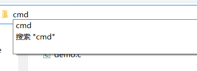
我们就直接进入命令行，并且处于当前目录。然后把上面那串命令 gcc.exe "D:\Devcpp\src\demo.c" -o "D:\Devcpp\src\demo.exe" 复制粘贴过来，按回车后稍等片刻，我们就能在文件夹里看到 demo.exe 文件了。
也可以把那串命令简化为 gcc demo.c -o demo.exe，效果是一样的。
总结：此方法的格式为
gcc 文件名.c -o 希望得到的可执行文件名.exe。可执行文件名不一定要和源文件名一样，但尽量保持一致。
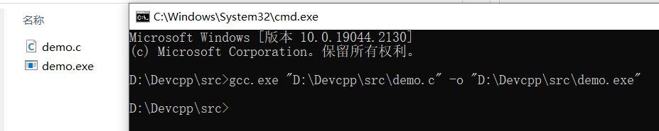
双击它，会发现啥也没发生，又好像有啥东西一闪而过，这是正常的。把上面代码改为
1 |
|
重新来一遍，中途黑框里会出现一个 warning，不用管。再双击 demo.exe，得到下面这个结果，成功了。
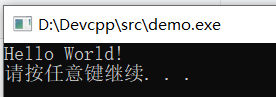
Dev C++调试程序方法
所谓调试程序，就是控制编译器一行一行地执行代码，过程中可以清楚看到每个变量值的变化情况、函数的调用过程等，进而发现程序中隐藏的错误或者低效的代码。
本文中，我们以一段完整的 C 语言程序为例，系统地学一下如何用 Dev C++ 调试程序。
1 |
|
1、Dev C++调试程序
默认情况下，程序会瞬间从开头执行到结尾，除非中途出现错误（称为“运行时错误”，比如读写内存失败、数组越界等）。要想让程序暂停执行，就需要设置一个断点。
所谓断点（BreakPoint），可以简单地理解成障碍物，汽车遇到障碍物不能通行，程序遇到断点就会暂停执行。
Dev C++ 给程序设置断点的方法很简单，想在哪一行代码处暂停执行，直接单击代码所在行的行号即可。例如：
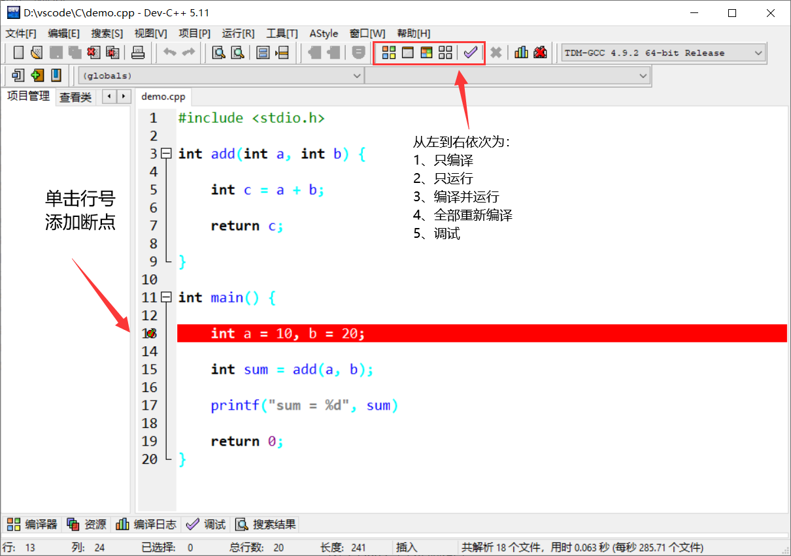
如上图所示，我们成功地在第 13 行代码处添加了一个断点。注意，以正常方式点击“编译并运行”按钮（快捷键是 "Fn+F11"）运行程序，断点是不会生效的，只有点击“调试”按钮（快捷键是"Fn+F5"）运行程序时才有效。
点击“调试”按钮，或者按下快捷键"Fn+F5"，程序开始执行，直到第 13 行代码处（当前行代码尚未运行）暂停，如下图所示：
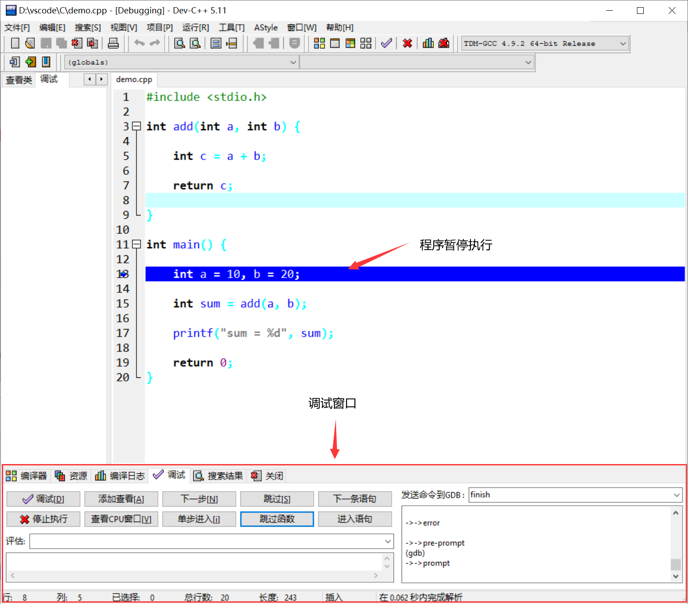
2、断点发挥的作用
当程序暂时执行时，借助调试窗口中的按钮可以查看某些变量的值，还可以控制编译器继续往下执行程序。整个调试窗口中，常用的按钮以及含义分别是：
- 添加查看：查看某个变量的值，还可以看到值的变化情况；
- 下一步：控制编译器向下执行一行语句；
- 单步进入：功能和“下一步”按钮类似，不同之处在于，当程序中调用某个自定义的函数时，此按钮可以进入到函数内部，继续调试函数内部的代码，而 "下一步" 按钮不会；
- 跳过：继续执行程序，遇到下一个断点暂停执行；
- 停止执行：停止调试程序。
举个例子，在“调试”框中单击右键，点击“添加查看”按钮监视变量 sum 值的变化情况，添加之后如下图所示：
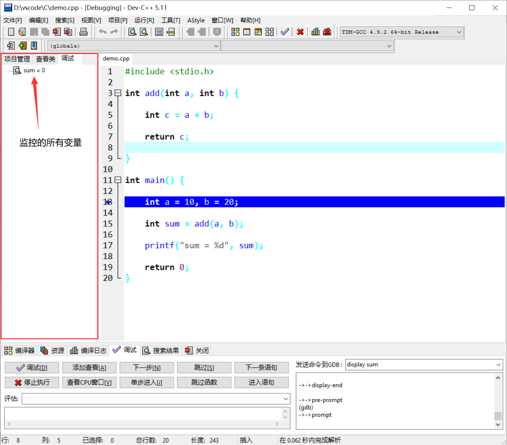
初始状态下，变量 sum 的值为 0。点击“下一步”，执行第 13 行代码，箭头光标指向第 15 行，变量 sum 的值仍为 0。再点击“下一步”，执行第 15 行代码，箭头光标指向第 17 行，变量 sum 的值变为 30。
当箭头光标指向第 15 行代码时，点击“单步进入”按钮，箭头光标会进入 add() 函数并指向第 5 行代码，感兴趣的同学可自行尝试。
调试过程中，Dev C++ 支持同时监控多个变量，还支持在程序中设置多个断点，如下图所示：
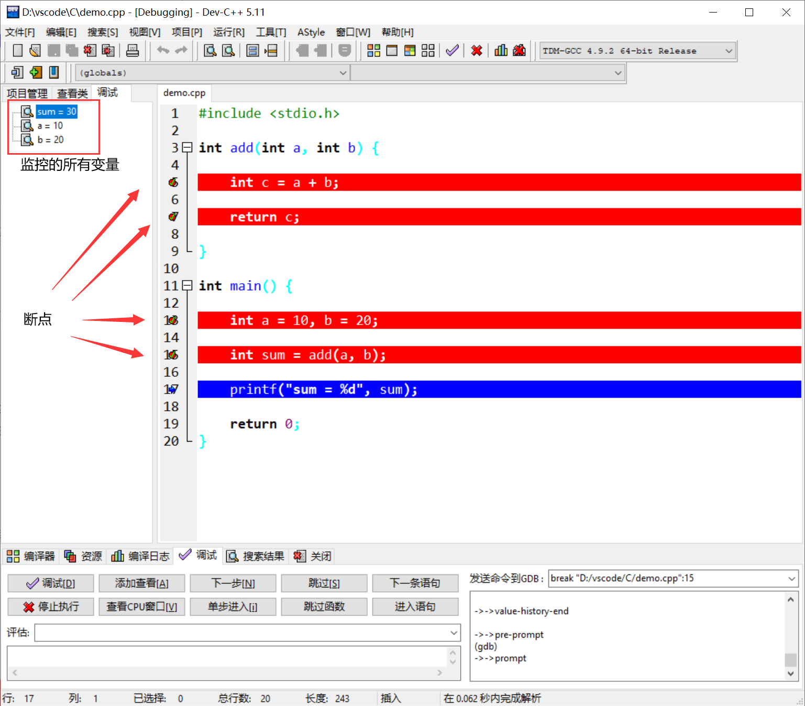
如果点击调试时出现下图报错
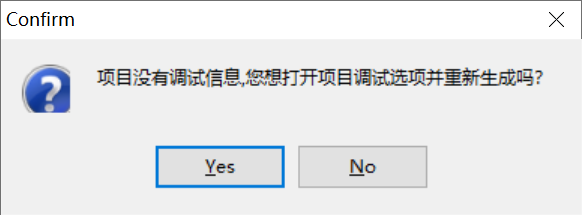
并在点击 Yes 后闪退，则重新打开 Dev C++，点击 菜单栏中的工具 -> 编译选项，在“代码生成/优化”中点击“连接器”，将“产生调试信息”改为 Yes 即可。
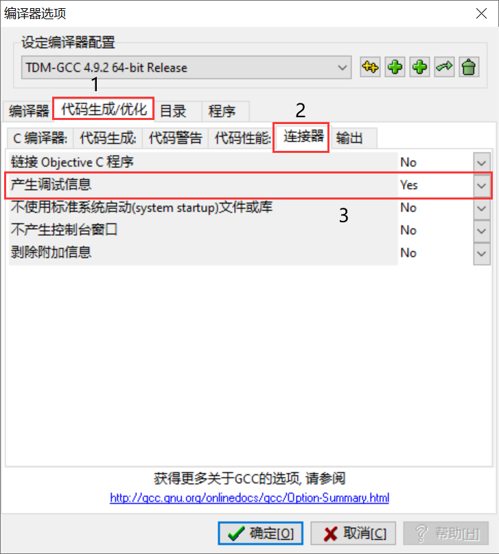